| |
Il castello Brivio Sforza a Zivido di San Giuliano Milanese era un complesso edilizio razionale ed autosufficiente che occupava, ed ancora oggi occupa, tutta la parte ovest della storica frazione avendo il fronte principale lungo l’intero asse della via Corridoni, questa ultima chiusa dalla quattrocentesca chiesa fatta edificare dall'antica Casata nobiliare.
La cascina del castello, posta a sud ed immediatamente a ridosso dell’edificio principale abitato dai Marchesi, rappresentava un importante elemento per la produzione di reddito oltre a risultare fra le pi� grandi del territorio.
A testimoniare la posizione di rilievo e l’attenzione ad essa riservata la cascina "Invernizzi", cos� chiamata e conosciuta dal nome della famiglia che per quasi un secolo e fino a poco meno di un decennio fa l’ha condotta, sono due elementi architettonici ben individuabili: l’ala sud del castello e lo scalone nobiliare che si apre sugli edifici agricoli.
Tralasciamo per� qui di parlare di questi ultimi, trattati in altra pagina, per concentraci sulla sola cascina oggetto di molta attenzione da parte della nostra Associazione fin dalla prima notizia della sua cessazione come attivit�.
Non appena varcato l’ingresso principale, che si affaccia sulla via Corridoni, ci troviamo ad ammirare una grande corte agricola tipicamente lombarda dove un tempo era l’aia, punto importante per l’attivit� comunitaria, ma anche luogo d’incontro sociale sia per i momenti felici sia per quelli tristi.
Subito a destra un altro cortile, pi� piccolo, delimitato dall’ala sud del castello che fa angolo retto con il salone delle feste dove si apre il semplice ma suggestivo scalone rinascimentale, particolarmente oltraggiato. Sul lato opposto alcune costruzioni agricole di servizio e il frontone della maestosa stalla. Quest’ultima domina la corte grande e, verso la via Gorky, mostra con orgoglio l’imponente stemma nobiliare della Casata Brivio Sforza a monito ed a protezione.
A sinistra dell’ingresso alla cascina � la casa padronale, con un piccolo portico, che ancora oggi conserva sotto la falda del tetto la campana che scandiva l’attivit� dei contadini. Da questo edificio si dipartono in linea retta una serie di costruzioni, una delle quali alla sommit� si apre con archi semplici e suggestivi che delimitano un grande spazio coperto dal tetto le cui travature paiono opera di pizzo. Due silos ed un piccolo edificio, che presenta una curiosa immagine affrescata, chiudono la corte grande verso ovest.
Oltrepassata la corte principale e girando verso sud, subito a destra, troviamo un’altra modesta costruzione, che per� sfoggia un piccolo stemma sul quale � dipinta la data 1904, destinata certamente a porcilaia; davanti e a sinistra altri edifici agricoli di varie dimensioni e destinazioni e gli orti, ora abbandonati, che si spingono verso la chiesa quattrocentesca.
Gironzolando in questo luogo ed, alzato lo sguardo, colpisce un altro maestoso stemma nobiliare della Casata Brivio Sforza collocato sul frontone dell’edificio dirimpetto quello leggiadro ad archi sopra menzionato. Pare che, con cipiglio, stia curiosando fra gli archi alla scoperta di momenti della vita umana.
Oggi l’intero complesso della cascina del castello, detta cascina "Invernizzi", � interessata da un progetto di intervento edilizio residenziale. Certo ognuno di noi avrebbe, in cuor suo, sperato in un destino diverso, meno traumatico, pi� rispettoso della sua storia secolare.
La realt� vuole per� che si affrontino le situazioni con la necessaria razionalit� e buon senso: bloccare ogni intervento finch� con il trascorrere degli anni tutto il complesso, caduto in rovina e ben poco di cui recuperare, divenga preda pi� facile di appetiti esosi oppure pretendere che si progetti con intelligenza salvando e valorizzando quanto pi� possibile collocandolo in una ambientazione rispettosa del contesto storico ed architettonico rappresentato dall’antico borgo?
(Pierino Esposti - 1 febbraio 2001) |
|
Dall'Archivio Storico Fotografico dell'Associazione Culturale Zivido
(clicca sulle immagini per ingrandirle) |
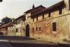 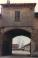 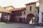 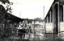
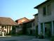 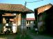 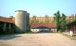 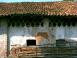
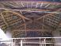 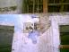 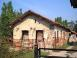 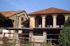
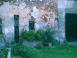 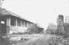 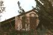
il nuovo progetto residenziale |
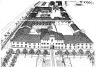 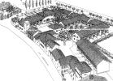 |